One month of Claude Max with Opus 5.5 later
I value engineering. I like good quality code, I like reading code, and I like knowing why something works the way it does. So it feels a bit odd to write this post: over one month of Claude Max with Opus 5.5 I mainly vibe coded nine Android apps, a few Linux and server counterparts, a personal F-Droid repository to ship them all, and a whole video game. It showed me that the way software gets made has changed. For personal apps like these, it's absolutely worth it.
This post tells the story of that month: the F-Droid repository, every app in it, the servers behind them, and why I cancelled the subscription at the end.
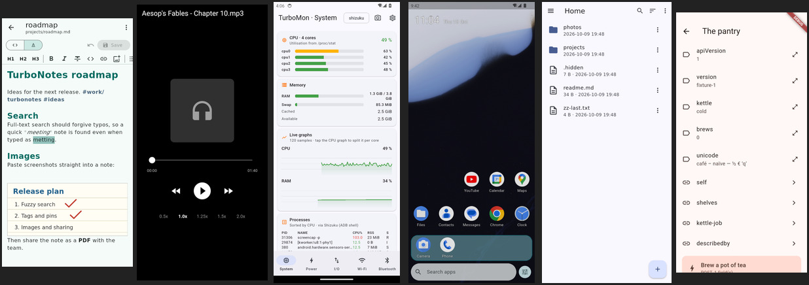
Table of Contents
Vibe coding, but with QA
All the Android apps in this post were mainly vibe coded. I wrote hardly any of the Dart, Kotlin or C++ by hand. But that doesn't mean nobody looked at them. Every app has an automated test suite, every change went through a lot of QA, and I used each app on my own phones, rated what felt wrong and had it refined. Again and again. The tests caught the regressions; my thumbs caught everything else.
Honestly, I don't like the term "vibe coding" any more. It sounds like a party trick, and this is simply becoming the normal way to produce software. Saying you shouldn't use LLMs to write software is like saying you mustn't use a compiler to generate machine code. It's just another tool and a new level of abstraction. There are still cases today where you need to understand machine code at a low level, but the majority of programmers never have to. I think the same is now true one level up.
Getting off Codeberg (where I ranted about this too)
Sideloading got old: my own F-Droid repo
It started with Quicklog. I had rewritten my old idea-logging app in Flutter and was copying APKs to two phones by hand after every change. That got old fast. F-Droid lets you add extra repositories next to the official one, so I set up my own. Now I tap "update" in F-Droid like for any other app.
F-Droid
snonux/fdroid on GitHub
Nothing gets built in the repository itself. Each app repo has its own release workflow: I start it with a version tag, it builds and signs the APKs with that app's own key and attaches them to a GitHub release. Every six hours (or on demand) a workflow in the F-Droid repo downloads the two newest releases of every app, plus the store text and screenshots, runs fdroid update to build and sign the index, and deploys the result to GitHub Pages. That's all. The APKs keep their developer signature, so an app installed from my repo can also be updated from any other source that ships the same signed APKs.
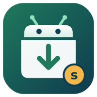
If you want to try any of the apps, add the repository to F-Droid. Scan this with your phone or add it by hand:
Address: https://snonux.github.io/fdroid/repo
Fingerprint: 04B05FB0565543E058372B867B3D3A699D9D668388CE670478EDD4116D736DF7
Onboarding a new app is documented in the repo, so the next coding agent (or me) can follow it. In the end, nine apps landed there.
The servers live in my home lab
Several of the apps are only half of the story. Player and File Browser have a server, and Quicklog, TurboNotes, ComicRedr, TurboLaunch and Gunrunners can sync through an S3 bucket of my own (Garage, not AWS). I host all the server parts in my home k3s cluster, the one I've been building in the f3s series. No cloud service involved.
f3s: Kubernetes with FreeBSD - Part 1: Setting the stage
Garage S3
Several apps also have a Linux counterpart. I mention them with each app below.
Notes: Quicklog and TurboNotes
Quicklog
Quicklog is the oldest one. It began as Quicklogger, a Go/Fyne app I blogged about in 2024: I'm an ideas person and want to jot down a thought on the street before it's gone. This year it got rewritten in Flutter and renamed. You type a note, hit "Log text", and it writes a timestamped Markdown file. Syncthing copies it to my laptop, or Quicklog writes it straight to my S3 bucket (or both).
It's tiny on purpose, but the details are done right. If S3 fails, the note gets written locally on the spot, so it's never lost. You can share text from any app into Quicklog, browse, edit and delete old entries, and export all settings into one JSON file. The same code runs as a Linux desktop app, which is handy on Fedora.
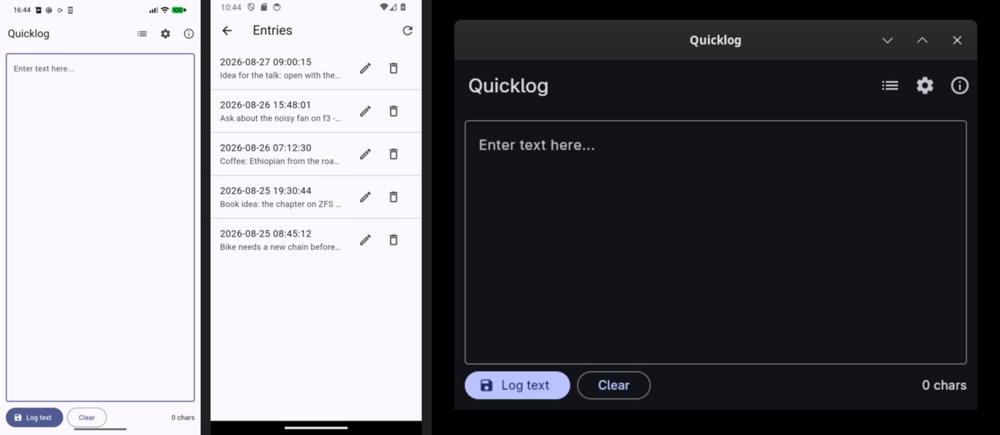
Quicklog on GitHub
A fine Fyne Android app for quickly logging ideas programmed in Go
TurboNotes
Quicklog jots down new notes, TurboNotes edits the ones I already have. You point it at a folder of Markdown files, for example one that Syncthing keeps in sync with the laptop, and get a file tree with pinned and recent notes, a tag tree, a fuzzy finder and full-text search that forgives typos. There's a raw editor and a WYSIWYG editor on the same Markdown text, and WYSIWYG never rewrites the note behind your back. Images go inline, from the gallery, the camera or the clipboard.
TurboNotes has replaced Markor on my phones. It also has a home-screen widget for quick capture, autosave that never silently overwrites a note changed on disk, and optional S3 sync that merges independent edits and keeps conflict copies. On the Linux desktop build there are vi keys, with real modal editing in the editor. And it can open text files from File Browser (more on that below) and save them back to the server.
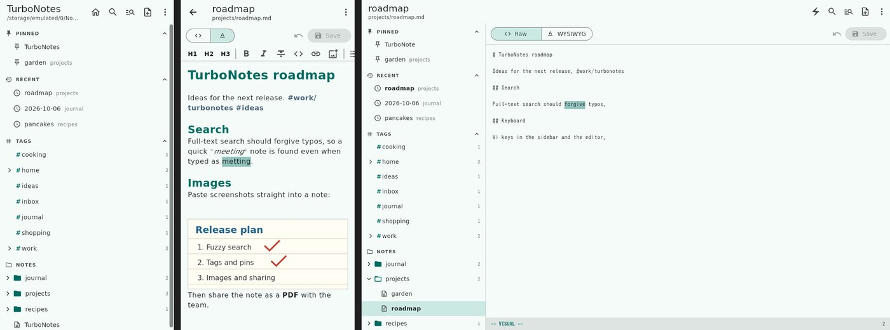
TurboNotes on GitHub
Markor
Player
Player is my self-hosted media server. The Go server with SQLite and a vanilla JavaScript web UI (no frontend framework, no build step) plays videos, music, audiobooks and podcasts, shows images, remembers where I stopped in each audiobook, and has tags, favourites, notes, position bookmarks, a search syntax (type:video tag:a min:30), time-limited share links, user accounts and Chromecast support. It's keyboard-first with vim keys. There are sound-reactive visuals and timed lyrics too, because why not.
The Android app plays from the server and also from local files on the phone. Player has replaced Jellyfin, Navidrome and Audiobookshelf for my personal use. Three services with three apps went down to one I fully understand and can change whenever I want. The server runs in a container in my k3s cluster.
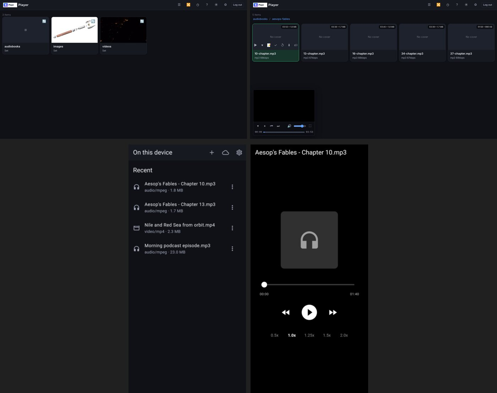
Player on GitHub
File Browser
File Browser is a create-your-own-cloud web UI: point it at a directory on a server and you can upload, preview, edit and share files from the browser. The upstream project was archived on 2026-09-01 and won't get any more releases or fixes, so I forked it. My fork carries security fixes made after the archive, and I keep it running for my own use.
And as a bonus, the fork now has a native Android client. It talks to the server's existing REST API, so it works with an unmodified File Browser server too. It browses, previews images, PDFs, video and audio, edits text files, does resumable uploads, manages files, searches, creates share links and signs in with a fingerprint. Text files can also be opened in TurboNotes and saved back to the server.
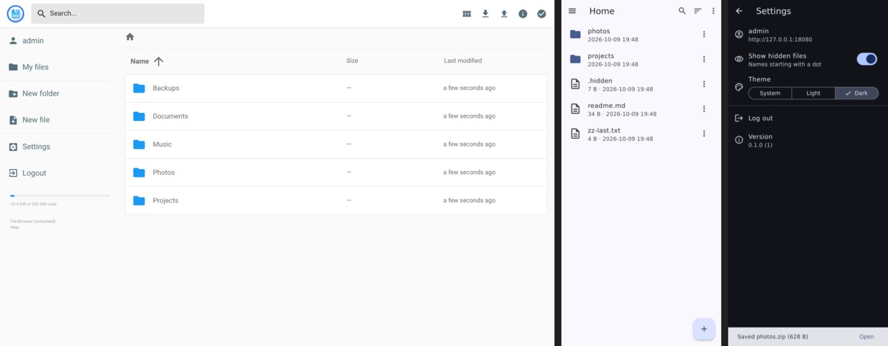
My File Browser fork on GitHub
Goodbye File Browser, for Real This Time (the upstream archive)
ComicRedr
ComicRedr is a comic reader for a Linux laptop and an Android phone or tablet. Its guided view glides from one panel to the next, and in balloon mode from one speech balloon to the next, like Comixology did. The panels get found by a small detector built into the app that runs on your own CPU. For comics where it struggles, you can also ask a coding agent to draw the panels: the repo's AGENTS.md tells it how.
It reads CBZ, CBT, comic EPUB, PDF and folders of images, has a library with covers, series, collections and bookmarks, and is keyboard-first with a vi layer on Linux. It picks up where you left off, on the same page, panel and zoom, and carries that to the phone through my own S3 bucket.
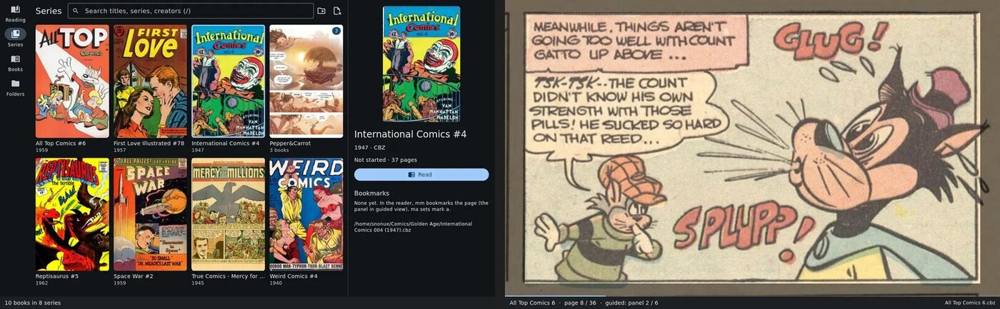
ComicRedr on GitHub
TurboLaunch
TurboLaunch is a small, search-first home screen for Android, made for GrapheneOS. Press Home, type two or three letters, press Enter, and the app opens. The search is fzf-style, so "orgm" finds Organic Maps. No tracking, no Google Play Services.
The home grid sorts itself by how often I launch things in the last 30 days, with the most-launched app at the bottom right, nearest the thumb. The launch counts add up across all my phones through S3, so the same apps get the same cells everywhere. There's also a quick launch bar, gestures, app pairs for split screen, work profile support and a stats screen.
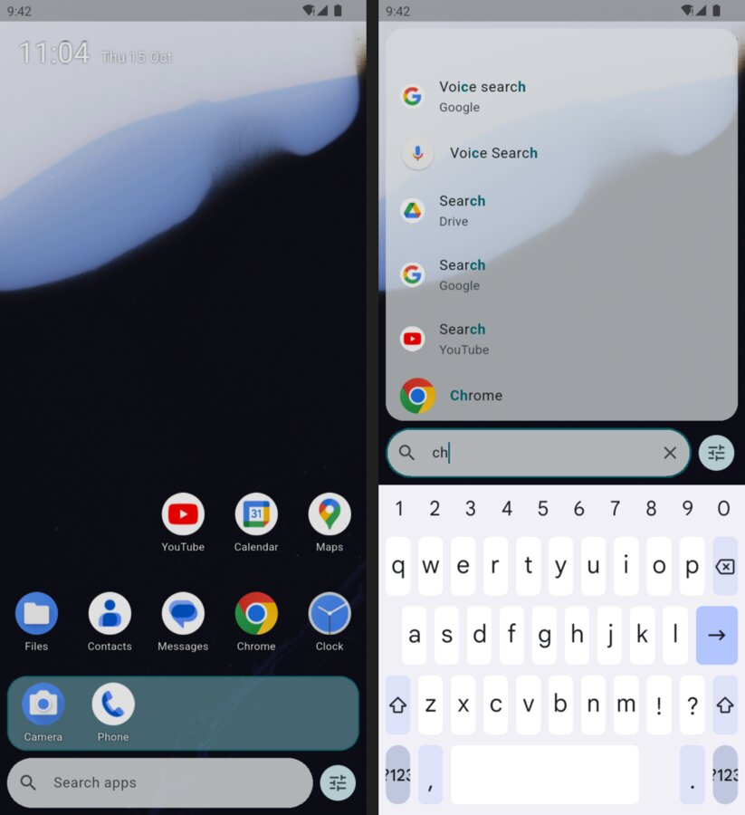
TurboLaunch on GitHub
Why GrapheneOS rox
TurboMon
TurboMon is the SRE in me on a phone: a top-style system monitor for Android. It shows CPU, RAM and GPU, live graphs, battery, temperatures, storage, disk I/O and network speed, and it has a Wi-Fi channel analyser and a Bluetooth scanner. Shizuku or root are optional and unlock real CPU percentages, the process list and all the thermal sensors.
The fun part is the snapshot. When something drains the battery, I take a snapshot and get a Markdown report that I can hand straight to an LLM to find the cause. TurboMon itself has no internet permission, so nothing leaves the phone unless I share it.
TurboMon on GitHub
RESTForge: the home lab on my wrist
RESTForge is a generic Siren hypermedia browser. Siren is a JSON format where the server tells the client which links and actions exist. RESTForge renders whatever the API offers: properties, links and actions. Follow a link and it fetches it, press an action and it asks for confirmation, runs it and keeps watching until the server says it's done. The rule is "never build a URL", so the client has no server-specific code at all.
Siren
There are three independent implementations of it in one repo, sharing no code: a Pebble watchapp (C and ES5 JavaScript), the Android app (Flutter) and a terminal client (Go, with a Bubble Tea TUI). I use it with f3sctl, a small API of mine that powers the f3s rack on and off, shows the host status and switches the rack fans. So I can now boot my Kubernetes cluster from my watch.
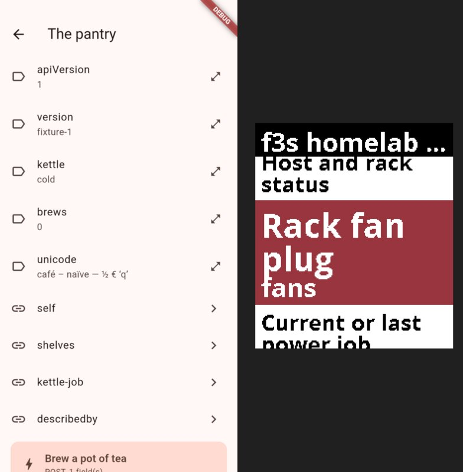
RESTForge on GitHub
Gunrunners: where most of the tokens went
And then there's Gunrunners. A lot of tokens went into this one, and I'm not sorry about any of them. It's a jump-n-shoot platformer that plays like Duke Nukem II. The movement is a frame-accurate port of Duke II's, via RigelEngine: the same jump arc, ladders, hang bars, the flamethrower jetpack, the colour-coded item boxes and the letters G-U-N. But it's drawn in smooth HD vector art with glowing neon and parallax backdrops instead of chunky pixels.
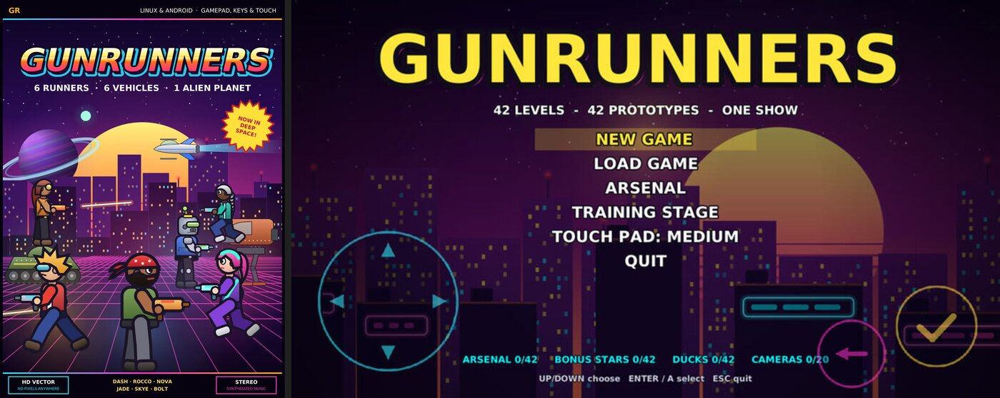
The Gunrunners website (gameplay videos, the story, the runners)
RigelEngine
You pick one of six runners (Dash, Rocco, Nova, Jade, Skye or the robot Bolt) or build your own in the runner editor, and you can swap runners mid-level. The campaign has 42 levels in six episodes, plus a seventh episode on the alien hive planet Vurr. Every level has its own twist, its own prototype weapon, its own soundtrack, a hidden bonus level behind a flickering TV, secrets and a briefing cutscene. Neon signs that are only solid on the beat. A fight along a moving maglev train. Mirror statues that bend sunbeams onto doors. A gravity lab that flips the room.

On top of that come six vehicles (tank, helicopter, hoverbike, submarine, space ship and mech), a double jump, carrying up to three guns, a map that fills in as you explore, a hard mode with about 200 extra enemies, assists that aren't cheats, runners who talk, and five save slots plus a quick save. The cloud saves go to an S3 bucket, of course. Every sound and every note of music is generated by the game itself. And there's a cheat code, but I won't tell you which one (OK, it's in the README).
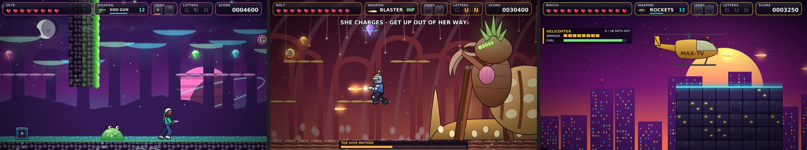
It's written in C++ with SDL2 and Cairo, about 240,000 lines of it, and git log shows 329 commits between 8 and 17 October. There's no way I'd have written that by hand in my spare time. The same source builds for Linux (a tarball or make install on Fedora), for Android (via my F-Droid repo, with touch controls or a gamepad) and for the browser via Emscripten. So you can play it right now without installing anything:
Play Gunrunners in your browser
Gunrunners on GitHub
A word of warning, though: I didn't have the time yet to play through all the levels myself. That's even though I spent a lot of tokens on quality. An agent played through every single level, and a bunch of scripts and tests check the rest, e.g. that every level can actually be walked from start to exit. Still, there will be bugs. If you find one, please report it:
Report a Gunrunners bug on GitHub
Why I cancelled the subscription
After that month I cancelled my Claude subscription, for now. Not because I was disappointed. I simply ran out of ideas for what to use the tokens for. All the apps I wanted are on my phones now, and they get updates through F-Droid like everything else.
I'll keep creating apps like these. But I'll split it up. In my own field of expertise (SRE, deep knowledge of operating systems and the like) I want to keep deep-diving and learning new stuff, just AI-assisted, with me in the loop and reading the code. For apps I just want to use and where I don't much care about the tech stack, I won't. I don't need to learn Flutter in depth to have a good notes app. There's a balance here, and everyone has to find it out for themselves.
What's not in this post
I worked on more things during that month of Claude Max than I've listed here. Among them are Gonf, my own KISS configuration management system in plain Go, a future new release of ior, and a future new release of DTail. They deserve their own blog posts with a bit more of a technical deep dive once they're ready.
Gonf on GitHub
Unveiling I/O Riot NG
DTail - The distributed log tail program
Other related posts:
2026-10-07 Running LLMs by myself - Part 2: The pi coding agent
2026-10-06 Running LLMs by myself - Part 1: Hyperstack and vLLM
2026-10-05 Getting off Codeberg
2026-06-01 gt calculator - a calculator built with local LLMs
2025-08-05 Local LLM for Coding with Ollama on macOS
2024-03-03 A fine Fyne Android app for quickly logging ideas programmed in Go
2023-01-23 Why GrapheneOS rox
E-Mail your comments to paul@nospam.buetow.org :-)
Back to the main site